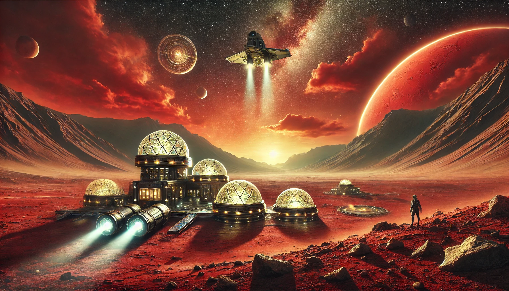

Martian Retreat
Journey to Mars with Martian Retreat, the crown jewel of interplanetary travel. Designed for those seeking unparalleled adventure, this package offers a fully immersive experience of the Red Planet. Your voyage begins with an awe-inspiring launch and a multi-week cruise through the solar system aboard our long-haul space cruiser, featuring spacious cabins, entertainment zones, and dining options that defy gravity. Upon landing, you’ll step into a world of crimson sands, colossal canyons, and towering volcanoes. Highlights include:
- A 7-day stay in our state-of-the-art Martian Habitat, complete with climate-controlled domes and panoramic vistas.
- Guided tours of Mars’ most stunning landmarks, including Olympus Mons and Valles Marineris.
- Opportunities to participate in Martian science experiments and rover missions.
- Round-trip transport in our interstellar-class spacecraft, ensuring a safe and comfortable return to Earth.